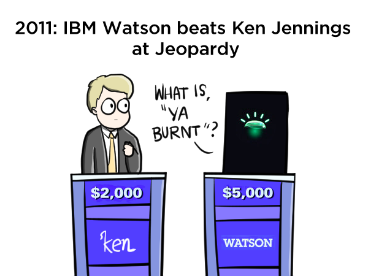
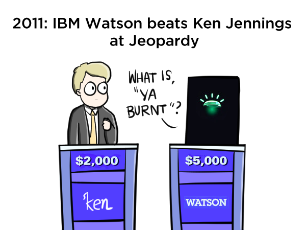
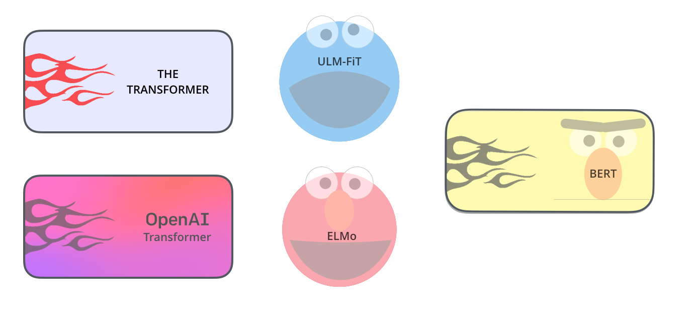
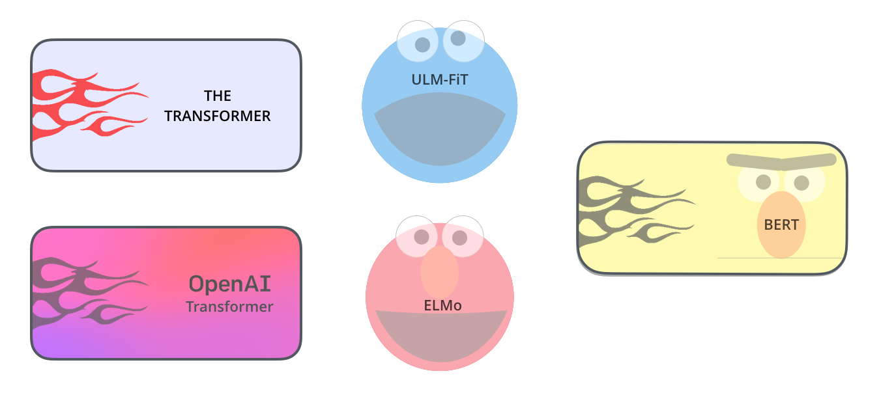

|
Date |
Topics |
Related Materials
and
Resources
|
Assignments |
| 1 |
9/1-9/7 |
Introduction to Computational
Linguistics / Natural Language Processing
Preliminaries:
|
PyTorch:
|
Install Python
3.x and PyTorch
모두를 위한 머신러닝/딥러닝(홍콩과기대 김성훈
교수)
- Linear
Regression의 개념:비디오, 강의 슬라이드
- Linear
Regression cost함수 최소화: 비디오, 강의 슬라이
- 여러 개의
입력(feature)의 Linear Regression: 비디오, 강의 슬라이드
- Logistic
Regression classification: 강의 슬라이드-Hypothesis 함수 소개:
비디오-
cost 함수 소개: 비디오
How to
Implement Simple Linear Regression From
Scratch with Python
Logistic
Regression for Machine Learning
|
| 2 |
9/8-9/14 |
Introduction
to a Neural Network
|
PyTorch:
|
딥러닝 개념잡기
|
| 3 |
9/15-9/21 |
Introduction to a Neural Network
|
PyTorch:
|
HomeWork Assignment
1: Backpropagation Calculation in Pytorch (refer
to ETL)
|
| 4 |
9/22-9/28 |
Introduction to a Neural
Network
- Parameter Optimization
- Weight Decay
- Batch Normalization
- DropOut
Hyper-parameter
Tuning Techniques in Deep Learning
An
Overview of Gradient Descent Optimization
Algorithm
New
State of the Art AI Optimizer: Rectified Adam
(RAdam)
New
Deep Learning Optimizer, Ranger: Synergistic
combination of RAdam + LookAhead for the best
of both
|
PyTorch:
|
|
| 5 |
9/29-10/5 |
Introduction to a Neural
Network
- Parameter Optimization
- Weight Decay
- Batch Normalization
- DropOut
Hyper-parameter
Tuning Techniques in Deep Learning
An
Overview of Gradient Descent Optimization
Algorithm
New
State of the Art AI Optimizer: Rectified Adam
(RAdam)
New
Deep Learning Optimizer, Ranger: Synergistic
combination of RAdam + LookAhead for the best
of both
|
PyTorch:
|
|
| 6 |
10/6-10/12 |
Convolutional Neural
Network
Understanding
Convolutional Neural Network for NLP
|
PyTorch:
|
HomeWork
Assignment 2: Convolutional Neural Networks
Paper 요약 (refer to ETL)
|
| 7 |
10/13-10/19 |
Reccurent Neural Network
A Friendly Introduction to
Recurrent Neural Network
Long
Short-Term Memory Neural Network and Gated
Recurrent Unit
|
PyTorch:
|
|
| 8 |
10/20-10/26 |
Encoder-Decoder
Encoder-Decoder
Long Short-Term Memory Networks
A
Gentle Introduction to LSTM Autoencoders
Step-by-step
Understanding LSTM Autoencoder layers
|
PyTorch:
|
|
| 9 |
10/27-11/2 |
Attention Model
Neural
Machine Translation By Jointly Learning to Align
and Translate
Attention:
Illustrated Attention
Attention and Memory in Deep
Learning and NLP
|
PyTorch:
Translation with Sequence to
Sequence Network and Attention |
HomeWork Assignment 3: Attention is
All you need(refer to ETL) |
| 10 |
11/3-11/9 |
Transformer
Self Attention: Attention
is All you need
The
Illustrated Transformer
Seq2Seq
Pay Attention to Self Attention: Part I
Seq2seq
Pay Attention to Self Attention: Part 2
|
PyTorch:
Translation with Sequence to
Sequence Network and Attention
PyTorch-Transformers
by Huggingface and Full
Documentation
|
|
11 |
11/10-11/16
|
BERT
(Bidirectional Encoder Representations from
Transformers)
XLNet
What is XLNet and
why it outperforms BERT?
XLNet - a clever
language modeling solution
XLNET -SOTA
pre-training method that outperforms
BERT
XLM
XLM - Enhancing
BERT for Cross-lingual Language Model
FastBert
Introducing
FastBert - A Simple Deep Learning Library for
BERT Models
RoBERTa
RoBERTa:
A Robustly Optimized BERT Pretaining Approach
RoBERTa:
An optimized method for self-supervised NLP
systems
Distilling
BERT - How to achieve BERT performance using
Logistic Regression
Meet
ALBERT: a new 'Lite BERT' from Google &
Toyota With State of the ART NLP performance
and 18x fewer parameters
BERT,
RoBERTa, DIstilBERT, XLNet - which one to use?
|
PyTorch:
The Annotated Transformer
BERT Fine Tuning
BERT Fine-Tuning
Tutorial with PyTorch
Painless
Fine-Tuning of BERT in Pytorch
The Latest
Breakthroughs and Developments
in Natural Language Processing
|
HomeWork
Assignment 4: BERT, XLNet, RoBERTa,
DistilBERT Fine Tuning (refer to ETL)
|
| 12 |
11/17-11/23 |
Assignment4:BERT,
XLNet, RoBERTa, DistilBERT Fine Tuning
Presentation
NLP Task 1: Sentiment
Analysis
PyTorch Sentiment Analysis
(IMDB)
|
NLP
Task 2: Sentiment Analysis for Korean
Naver Movie Review Sentiment Analysis
A Comprehensive Introduction
to Torchtext
Torchtext
Github
|
Get
ready for your presentation!
|
| 13 |
11/24-11/30
|
Embeddings (word embeddings)
Sebastian Ruder의 On word
Embeddings Part1, 2, 3, 4:
A
hands-on Intuitive Approach to Deep Learning
Methods for Text Data - Word2Vec, Glove, and
FastText
The
Current Best of Universal Word Embeddings and
Sentence Embeddings
Notebook
|
PyTorch:
Word
Embeddings: Encoding Lexical Semantics
BERT Word Embedding
|
Guest Talk in Class on
11/26:
Character Mining:
Machine Comprehension By Prof. Jinho Choi at
Emory University
Linguistics
Colloquium on 11/26 at 5:00:
Emora: Social Chatbot that Cares For you By
Prof. Jinho Choi at Emory University
|
| 14 |
12/8-12/14 |
NLP Task
2: Chatbot
Chatbot
Tutorial
NLP Task 3: Generating and Classifying
Names with a Character-Level RNN
|
|
|
| 15 |
12/15-12/21 |
Final Project
Presentation
|
|
|
 
 
